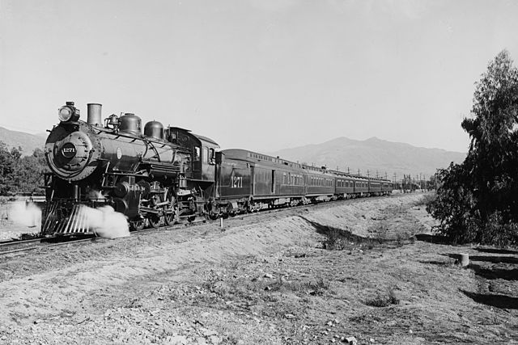
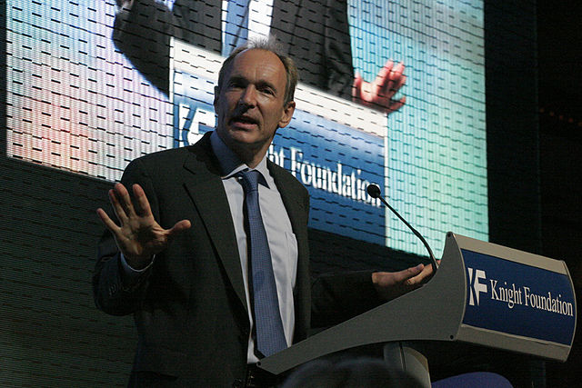
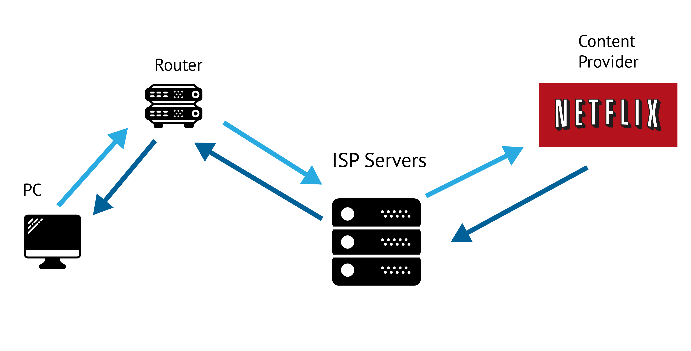
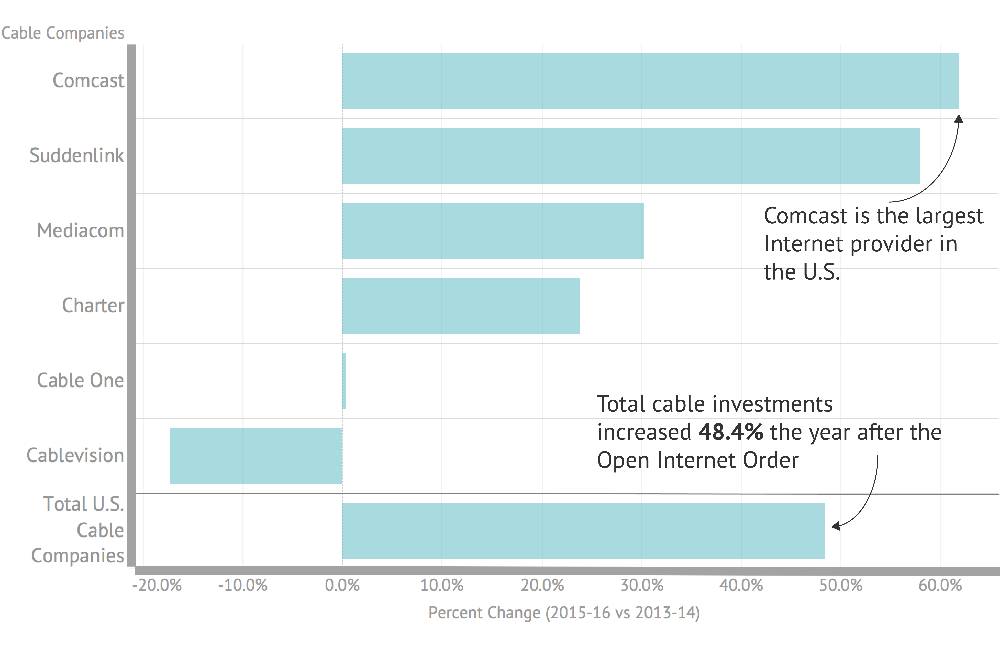

For the second time in three years, net neutrality has stepped out of obscurity and into the public debate. On May 18, the Federal Communications Commission (FCC) voted to start the process of repealing parts of the net neutrality regulations introduced in 2015. The official proposal, released a week later, kicked off a 90-day public comment period for people to leave feedback on the proposal at the FCC’s website.
This has happened before. In 2015, it was Tom Wheeler (D) asking for public comment on how to best regulate ISPs. That time, Wheeler listened to the 3.7 million comments that were left on the FCC website.
But now there are different players at the table.
At the center of the debate is Ajit Pai, Chairman of the FCC and longtime Republican. Pai is joined on the FCC by fellow Republican Mike O’Reilly and lone Democrat Mignon Clyburn. Together, this three-person commission is in charge of deciding how to regulate (or prevent the regulation of) ISPs in America.
Ajit Pai was handpicked by the Trump administration for more than his Republican loyalties. Before serving as a commissioner on the FCC in 2012, Pai served as a telecommunications lawyer for Verizon. He has also been well known for his anti-regulatory agenda and pro-consolidation approach. His appointment as FCC Chairman was widely praised by telecom giants Comcast, AT&T and Verizon.
As Chairman, Pai laid out plans in his induction speech to take a “weed-whacker” to the “set of heavy-handed regulations on the Internet”. But on the other side of the net neutrality debate is a determined group of consumer advocacy groups, tech companies and liberal activists. The primary battle lines have been drawn between keeping net neutrality, and doing away with it. But this is more than just a policy war: it’s a battle of semantics.
Writers on both sides of the debate are constantly defining, redefining and redefining again the meaning of the term net neutrality. Both sides use terms like “Internet freedom” to support their cause. It is a semantic splitting of hairs, a further complication to an already technically complex issue.
But at its core, the debate over net neutrality comes down to one, mysterious regulatory definition: Title II. Put simply, the Title II status placed on ISPs by the 2015 FCC decision is the only thing that gives the FCC what the industry often calls “regulatory teeth”. It gives the FCC power to prevent an ISP from blocking certain content, or from slowing down content loading speeds it doesn’t particularly like. Furthermore, it places ISPs in the same realm as other public utilities like telecommunications services .
As it turns out, getting to the bottom of the true implications of Title II regulation is becoming increasingly difficult.
A quick Google search of “net neutrality proposal” will show lists of articles warning of the Internet’s demise, sprinkled with a few business op-eds praising the economic wisdom of reducing Internet regulation. Liberals are outraged. Conservatives are praising economic common sense. But beneath the partisan rhetoric of American politics lies a deeper story, one far older and more significant than bipartisan politics.
This is a story about railroads and telephone wires. It’s a story about building and maintaining the greatest information system known to mankind. But most of all, it’s a question: who gets to decide what kind of internet we all use?
↓ From Railroads to Fiber-optic Cables ↓
-
- The Pacific Railway Act
Starting in 1820, states and local communities provided huge amounts of financial aid to railway companies. The goal was expansion: states were expected to put up the capital, but stay out of any regulatory matters in the industry. The Pacific Railway Act of 1862 gave the responsibility of giving out grants to 16 federal administrators.
 By Detroit Publishing Co., Public Domain -
- Interstate Commerce Commission is formed
As the railroad industry grew, stories of corrupt railroad rating and bankrupt companies shook the nation's confidence. The federal government passed the Interstate Commerce Act of 1887 to create the first regulatory commission in America: the Interstate Commerce Commission (ICC). But the ICC struggled to regulate railroad rates. Railroad lawyers and lobbyists argued that federal regulation in private businesses would threaten the American economy. They also claimed that railroads were not subject to commerce regulation, as they were
"common carriers" , not the commerce itself. -
- Theodore Roosevelt becomes President
By this time, most railroad companies in the U.S. had merged into six conglomerates. After becoming President in 1901, Theodore Roosevelt started addressing the unequal prices in railroad shipping.
The railway is a public servant, its rates should be just to and open to all shippers alike. The government should see to it that within its jurisdiction this is so and should provide a speedy, inexpensive, and effective remedy to that end.

- Theodore Roosevelt -
- Roosevelt Breaks J.P. Morgan's Railroad Trust
Theodore Roosevelt used the Sherman Antitrust Act of 1890 to bring a lawsuit against JP Morgan and split up his railroad trust. Roosevelt won the case at the Supreme Court in 1904.
Trust arrangements permitted railroad lines to avoid competition by harmonizing their operations, agreeing not to invade one another's territories and desisting from mutually destructive behavior.
- Susan Crawford in her book Captive Audience -
- Telephones added to ICC responsibilities
Congress added telephone systems to the ICC responsibilities in 1910. Based on their model, the ICC treated telephone companies like railroads declaring telephone companies to be common carriers.
By Holger.Ellgaard - Own work, CC BY-SA 3.0, Link -
- FCC is created
With telecommunication rapidly rising, the FCC was created in 1934 on the model of the ICC to handle all communication related regulation. The ICC faded out in the next decades due to railroad nationalization.
-
- Breakup of the "Baby Bells"
The FCC and FTC led the Breakup of the Bell System, a process of events that divested AT&T's monopoly over the telecommunications market. The resulting smaller companies, referred to as "Baby Bells", would later form the parts of the companies now heavily involved in the internet market: AT&T Inc, Verizon and CenturyLink.
-
- Birth of the World Wide Web
Tim Berners-Lee is credited with the creation of what we now call the World Wide Web. In this year, he created the first web server and web browser, which would later be called Nexus.
 By Scott Henrichsen - Sir Tim Berners-Lee talking about the Web at the Newseum, CC BY 2.0 -
- Telecommunications Act of 1996
The Telecommunications Act of 1996 formed the basis for communication regulation for the next two decades. However, it also included some ambiguous language: the FCC classified the internet under "information services" to keep it from the Title II regulation applied to telecommunications companies. But at the same time, the act also required the FCC to help accelerate "advanced telecommunications capability" (section 706 of Communications Act of 1934), which included data, graphics, video and VoIP. These two requirements went on to become arguments for both pro and anti-net neutrality camps.
-
- Comcast vs FCC
The FCC made its first major decision in the realm of net neutrality in 2008 when it upheld a 3-2 decision against Comcast, who was charged with throttling the speeds of its users accessing file-sharing software such as BitTorrent. No fine was charged, but Comcast was required to stop slowing down speeds.
By Comcast, Public Domain, Link -
- Principles of net neutrality introduced
The FCC informally adopts three principles of net neutrality: transparency of network management, no blocking or throttling lawful content and no unreasonable discrimination against consumers.
-
- Open Internet Order
Led by President Obama and current FCC Chairman Tom Wheeler, the FCC passed the Open Internet Order to legally preserve the principles of net neutrality. The Open Internet Order reclassified broadband internet from an information service to a telecommunications service. This placed broadband internet under Title II (also referred to as common carrier law from the railroad era) regulations under the Communications Act of 1934.
Now, two years after Obama’s Open Internet Order, Chairman Pai is continuing to push forward his response: the Restoring Internet Freedom order. Disguised as a common net neutrality call-to-action, the order actually wants to set things back to how they were before 2015. The proposal’s purpose can be broken down into three main objectives: repeal Title II regulation of ISPs, weaken the FCC’s powers to proactively investigate ISPs and rewrite net neutrality principles as a set of self-adopted guidelines for ISPs.
Chairman Pai wants to take a conservative economic approach by reducing the “Mother-may-I” relationship between business and government. If the ISPs pinky-promise to be good, the FCC won’t step in until there is a clear violation of the law. On the other side, Pai’s opponents fear making net neutrality voluntary: they would rather the FCC have a big stick visibly in hand, ready to take legal action against ISPs.
But to some extent, simply understanding the history of communication regulation isn’t enough. Despite being used by hundreds of millions of Americans everyday, internet technology and how it works can often be misunderstood.
Internet Freedom Order
1. Repeal Title II regulations
2. Reduce FCC's investigatory authority
3. Rewrite net neutrality as self-adopted principles
Modern Day Networks
In the days of railroads, policymakers were concerned with terms like rate-setting, rail consolidation and common carriers. But now the language is different. Railway tracks became fiber-optic cables. The behemoths of industry — Great Northern Railways, J.P. Morgan — have been replaced by companies like Comcast, CenturyLink and AT&T.
This sort of rapid technological transformation begs a question — should old rules be applied to such new systems?
Enter one of cable internet’s favorite counter-arguments: the Antiquated Approach. Following the 2015 net neutrality decision, Verizon released a sarcastic press release written entirely in Morse Code, describing the Title II regulations as “antiquated” and “unnecessary”.
While Verizon’s PR stunt was clever, it’s guilty of oversimplifying the debate. New technology can still benefit from old principles and legislation. When it comes to governing the internet, it’s important to know what these regulations would actually affect.
“Blocking” and “throttling” are two terms at the center of the net neutrality discussion. Net neutrality advocates worry that if ISPs are not required by law to treat content the same regardless of the source, they could potentially set up “fast lanes” for content companies that can afford to pay for a speed boost.
Gigi Sohn, counselor to the former chairman of the FCC and Free Press advocate, commented on this possibility during a net neutrality roundtable hosted by Mozilla. "The internet has been the most democratic of services, but all of that is under threat if the big guys or gals can pay for faster service," Sohn said.
This is really about whether the FCC will have oversight over access to the most important network of our lifetime.
As with most complex systems, examples of how issues of net neutrality affect the internet can help set the scene. Let’s look at a recurring hypothetical situation from net neutrality advocates: the Startup Crusher. With no net neutrality rules in place, ISPs could potentially require small companies that move a lot of content through the internet servers to pay extra for a speed boost in their service. Because of Netflix’s rise to success, they could probably afford to pay the extra cash to boost their video loading speeds. But before Netflix was Netflix, it was just another Silicon Valley video startup with a dream. And in this situation, the other Silicon Valley video startups would be at an immediate speed disadvantage if they cannot pay the fee. That means losing viewers. Studies have shown that some internet users start to abandon videos after only two seconds of loading
This first scenario contains a few nods to real-life events. Reed Hastings, CEO of Netflix, told a reporter at the Code Conference in May that net neutrality wasn’t on his company’s list of high priorities at the moment, explaining that “where net neutrality is really important is the Netflix of 10 years ago.”
“It’s not narrowly important to us because we’re big enough to get the deals we want,” Hastings said.
Another hypothetical worth mentioning revolves around zero-rated services. Large ISPs such as Comcast have been expanding vertically by purchasing content companies like NBC Universal. In this scenario, ISPs like Comcast could boost the speeds of its own content services while throttling users’ access to outside content providers like Netflix.
Paul Bischoff, editor of tech site Comparitech and long-time tech writer, has written extensively on issues of net neutrality and internet startups. He tends to view zero-rated services as a thinly cloaked gatekeeping process.
The Internet Works Through Series of Requests and Responses Between Computers, Servers and Content Providers
Graphic simplified for illustrative purposes. Own work. Logo by Netflix - Netflix Media Center, Public Domain
“I think it's just anti-net neutrality under a different name. You're still funneling people to a specific service,” said Bischoff. “Of course, they still have the freedom to use another service...but that allows ISPs to be gatekeepers and pick winners and losers for the Internet.”
The Open Internet Order of 2015 gave the FCC authority to get preemptively involved in complex issues such as throttling content and zero-rated services. But for Chairman Pai, this was creating a solution to a problem that didn’t exist. "For decades before 2015, we had a free and open internet," said Pai in an FCC address. "We were not living in some digital dystopia before the partisan imposition of a massive plan hatched in Washington saved all of us."
He may have a fair point on the “digital dystopia” bit. Since 2000, the percentage of U.S. population using the internet has more than doubled, from 43% to currently 88.5% as of 2016 .
That being said, claiming that

Competition and Carving Out Markets
In the U.S., identifying as a free-market economist can feel as American as apple pie. Professor Dennis Weisman, who specializes in the economics of regulation at Kansas State University, uses the zero-rated service example as a good way to explain the conservative economic view.
“I am a free-market economist. That means I want to see evidence of a non-transitory market failure before I am willing to accept that government intervention will improve economic welfare,” said Weisman. “I just don't see the market failure here.”
He went on to explain that it really comes down to a matter of who is willing to take risks. If using zero-rated services pays off, then the market decided. It’s then up to other ISPs to either take the same risk to keep up, or try something different. “The government should not be in the role of protecting competitors from their own bad strategy or their reluctance to take a risk that other providers have been willing to bear,” said Weisman.
But putting zero-rated services and other risk-taking aside, there is an even deeper issue at the root of net neutrality, one rooted in the unique history and landscape of the U.S.
Across the country, 67% of internet users have no more than 2 or fewer choices in broadband providers.
A few caveats should be mentioned here at the start. This 67% statistic comes from an FCC report from 2014. It also is based on the FCC definition of the “broadband” at the time. In this case, broadband refers to only wireline broadband internet access at the standard qualifying speed of 4Mbps download rate and 1Mbps upload. Nevertheless, this was the internet landscape when the 2015 Open Internet Order first came up for debate.
Fast-forward to 2016, and the FCC has redefined the standard qualifying speed for fixed wireline broadband to 25Mbps/3Mbps, nearly 6 times the download speed of the previous definition. With this new definition came another report, and a wave of stats illuminating the apparent lack of competition in the broadband internet market. The FCC found that 21% of census blocks only had one provider offering the new standard broadband speed. 30% of blocks had zero options at 25Mbps/4Mbps.
Net neutrality advocates point out that because the cable internet landscape is dominated by a handful of companies, it is even more important to have Title II regulations to protect consumers and smaller businesses.
Matthias Klang, associate professor at Fordham University, focuses his research on issues of digital activism, privacy rights and bridging the digital divide.
The state of broadband in the States is problematic on many levels. Part of it is down to the fact that the main cable companies have divided up the world among themselves here. Which means they don't have to try as hard to provide the services that families and individuals need.
- Matthias Klang
To say “divided up the world” may seem like an exaggeration; but when you map the broadband availability data, the visual is striking. The National Broadband Map, created in 2014 under the FCC, allows users to see where internet services are provided across the country. The data includes various types of internet access, including wireline broadband cable, wireless, DSL and fiber-optic.
However, for some time now the measurement of wired broadband cable access has remained the standard for measuring the state of the industry. Broadband cable is faster on average than DSL and wireless technology, and although fiber-optic has shown speeds that far surpass wired broadband, the service is still in testing phases in many parts of the country.
By mapping the providers offering wired broadband internet, one can start to see the dividing lines take shape. The following maps show how even in urban areas, cable broadband providers can strategically carve out service areas among themselves, and reduce consumer choice for service. Areas where broadband providers overlap are very rare.
Majority of Americans Have No More than 2 Choices of ISPs at Qualifying Broadband Speed
In 2014 67% of Americans had 2 or fewer choicers in broadband internet providers
Hover for exact values. Click a category to remove from chart.
Data from FCC Internet Access Services report
For Paul Bischoff, these dividing lines set the scene for the kind of regulation that Title II provides. “Ideally, in all honesty we wouldn't have to have the Title II rule if we could have more competition among ISPs,” said Bischoff.
But others see this as too narrow a view. Michael Santorelli is a Director of the Advanced Communications Law & Policy Institute (ACLP) at New York Law School, and has written widely on broadband and telecommunication regulation. “Consumers are the best regulators in competitive markets – and the broadband space is competitive,” said Santorelli. “Consumers have numerous options for getting online at an array of speeds. Data showing limited choices for access reflects one, an artificially high speed thresholds for measuring ‘broadband’, and two, an unfortunate policy preference for considering only a wireline connection as ‘broadband’. For most consumers, myself included, broadband speed is an abstraction – your connection either allows you to do what you want or it doesn’t.”
Access to any kind of internet connection surely is the first priority over speed or type. After all, certain people may only use the internet for basic tasks that don’t depend much on high speeds like email or messaging. From this perspective, it’s all “internet”.
But a study conducted for the Federal Reserve Board has shown that high school students with access to high-speed internet showed improved results on SAT scores and other postsecondary outcomes ). More access, combined with faster access, is the ideal scenario. And with fiber-optic still being tested and DSL technology falling behind, broadband is usually the best bet.
So how do we get there? People like Santorelli and Dennis Weisman say consumers should use their choice of provider as a pressure on the market to improve. Others see the market as, in part, already failed since the choices don’t always exist. Tim Wu, professor at Columbia Law School and author credited with officially coining the term net neutrality, explained his take in a 2014 interview with the New York Times.
“It’s just very simple economics,” Wu told the NYT. “The average market has one or two serious Internet providers, and they set their prices at monopoly or duopoly pricing.”
When you've only got one provider, who makes the rules? The provider makes the rules.
- Previous FCC Chairman Tom Wheeler
It’s easy to feel lost in the sea of technical terms around net neutrality, especially when both sides are promoting “free” and “open” access while meaning two different things. Wu might consider “serious Internet providers” as wired broadband, while people like Santorelli fail to see the practical difference between DSL, broadband and wireless — as long as it gets the job done.
Perhaps an additional measure is needed to assess the state of U.S. broadband and ISPs. In 2015, the Organisation for Economic Co-operation and Development (OECD) released their Digital Economy Outlook report. Their research analyzed the cost and speed of broadband offerings in the 35 countries within the organisation.
Of the countries measured, the U.S. tops the list as the most expensive country for average broadband internet subscriptions. Among other findings, the Institute found that Americans on average were paying more for slower speeds compared to countries around the world.
U.S. Pays More for Slower Internet
Hover for exact values.
The U.S. is the most expensive OECD country for broadband internet subscriptions at an avg of $69.66 per month. It ranked 23rd of 34 in speed.
Data from OECD Digital Economy Outlook 2015 Report. Speed testing conducted by M-Lab. Prices calculated based on recurring 15 GB / month plans with 25/30 Mbpss and above, VAT included, Sept. 2014.
Pai claims to be combatting this disadvantage by removing Title II. In his opening speech at the FCC, he cited a different study claiming that since Title II regulation was introduced in 2015, the broadband industry has lost $5billion in investment . This has been one of the key findings he often uses to prove that net neutrality will cripple broadband expansion.
Shortly after these remarks however, some concerns were raised on the validity of the study. The research was conducted by a conservative think tank called the Free State Foundation. The Foundation has some notable ties to the telecommunications lobbying industry, receiving hundreds of thousands of dollars in donations from cable lobbying groups.
Advocacy group Free Press published their own report in response to Pai’s comments containing an analysis of financial disclosures, statements from investors and infrastructure investments by publicly traded ISPs since 2012.
“If investment is the FCC’s preferred metric, then there’s only one possible conclusion: Net Neutrality and Title II are smashing successes,” said Free Press Research Director S. Derek Turner, the author of the report.
The Free Press report shows that public traded ISPs were not affected negatively by legislation introduced in 2015. The report also cites multiple CEOs of ISPs as telling investors that the Title II regulations of 2015 would not hurt their investment plans.
Title II, it didn’t really hurt us; it hasn’t hurt us.
- Charter CEO Thomas Rutledge
But even here, in the realm of analysing hard infrastructure data, the battle of semantics rages again. The documents used by Free Press are legal and credible sources; but for Santorelli, they are taking too wide of a scope by analysing the output of entire companies.
“The Free Press report and others of its ilk that I’ve seen appear to evaluate all investments made by firms that offer broadband, including internationally and investments in non-broadband service offerings,” said Santorelli. In contrast, the Free State Foundation study cited by himself and other economic writers “seems more directly relevant”.
So while numbers don’t lie, they depend on your definition of broadband. They also depend on if you evaluate a company’s investment figures on total investment spent, or on only wired broadband. Many of these companies have diversified so much that they offer multiple kinds of internet across the country.
In some respects, focusing too much on definitions may be the wrong approach however. Investment plans by large companies are often planned far in advance. Large ISPs like AT&T announced to investors back in 2012 that they would be increasing investment in wireless and wireline internet until 2015, after which they would return to previous levels . This decision was made long before the net neutrality debate introduced Title II regulation in 2015. By zooming in on changes within just a few years of new legislation, there’s a risk of capturing too small of a sample size.
"Because AT&T alone accounts for nearly a third of the total ISP industry’s investments, any cyclical shift at AT&T can impact the aggregate in a manner that swamps the overall actual trend," Turner wrote for Free Press.
Regardless of AT&T’s planned decline in investment after 2015, Free Press found that the aggregate increase in ISP investment since 2015 was a 5% increase. Regardless of the findings over a few years, it’s worth noting that making huge claims of investment loss based on only a few years of data (not to mention assuming correlation = causation) is hardly the foundation of a solid argument.
Free Press Report Shows Cable Broadband Investment Increased Overall After Open Internet Order
Data from Free Press Report
Public Utility or Light-touch Regulation
Chairman Pai usually describes Title II regulation as reclassifying broadband as a public utility. Big broadband companies have quickly joined to support him in making sure Title II is removed in August. But Free Press and other advocacy groups have started to accumulate their own coalition on the other side.
Advocacy group Battle for the Net and other net neutrality proponents organized a Net Neutrality Day of Action on July 12. Major tech companies such as Twitter, Netflix, Mozilla, Reddit, and more participated by adding popups and loading screens on their sites as a form of protest. Battle for the Net collected roughly 2.1 million comments to post on the FCC comment site over the course of the day.
Beneath the technical debate over ISP investment, and beneath what counts as broadband internet speeds, lies a more philosophical question that shapes how people view net neutrality: is the internet more of a luxury or a necessity? Is it a service like cable television or Netflix? Or is it a utility, like electricity or water?
Protest against #NetNeutrality goes live. This is the message Reddit shown on r/technology pic.twitter.com/E5kwbK1Zli
— Catalin Cimpanu (@campuscodi) July 12, 2017
A recent survey conducted by Freedman Consulting found that 83% of Americans polled believe that "internet is essential infrastructure, like roads and bridges". Results showed bipartisan support for net neutrality regulations.
As Gigi Sohn described in a round table discussion, the net neutrality debate is more than a battle between big business and government. She called it a debate about how to oversee the “most important network of our lifetime”.
Public comment and industry opinions have been shown to sway legislation in the past. In part, the FCC decision in 2015 was influenced by massive consumer coordination on behalf of stricter net neutrality regulation. But that was also under a Democratic president who supported these regulations, and an FCC Chairman who was a Democrat as well.
Paul Bischoff fears that this time around, the 90 day comment period is more of a “formality” than anything.
I think Chairman Pai and the Trump administration are going to do what they want to do. I don’t think they will take into consideration what the general public wants because they are working in the interests of ISPS, particularly Chairman Pai who is a former Verizon lawyer…
If Pai's proposal does go through unaltered, net neutrality regulations will likely become a footnote on the Terms & Agreements contracts of ISPs whenever they install broadband service. ISPs will have less oversight when it comes to broadband expansion, zero-rated services and content throttling. This could lead to benefits for the industry and speed boosts for consumers.
Alternatively, it could be handing ISPs more power than they already have.
The debate over net neutrality regulations comes down to who should have control over regulating the internet. ISPs in America, now joined by Ajit Pai, have shown a keen interest on maintaining the control of their own pipes and setting their own rules.
With both sides of the debate using their own reports and data, it can feel like the net neutrality issue is falling into the ever growing divide of post-truth politics. Appeals to emotion can be found in each camp and data is picked based on shifting definitions of what is and is not broadband internet. But definitions aside, the crux of the matter comes down to whether or not large ISPs can be trusted to voluntarily keep a truly content neutral internet.
Technology is always evolving and internet access continuesto expand. An official decision on Pai's proposal will be made on August 16, but the discussion is far from over. And though the technicalities can be confusing, this debate isn’t for policy wonks and economic think tanks: it’s for the people, the users of the internet, to decide how to treat the network of a lifetime.